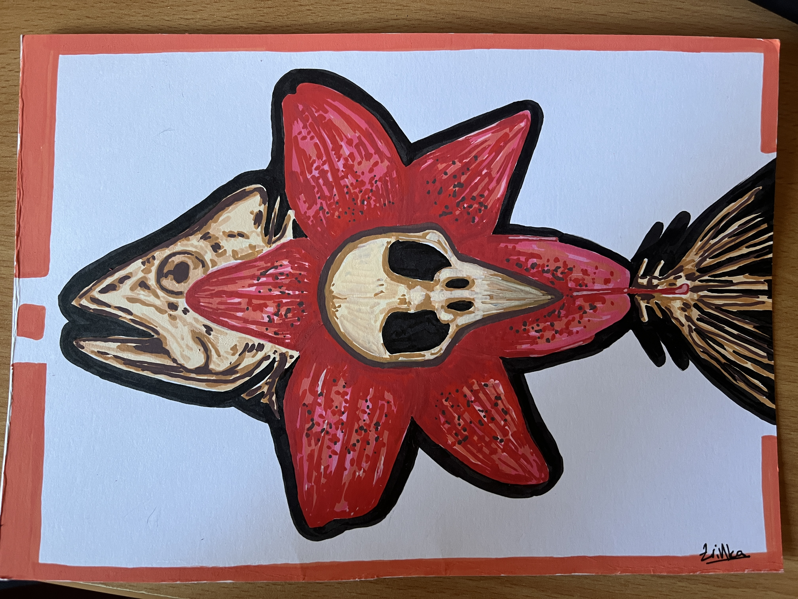

BUZDOVANI
Ovaj rad je u tehnici akrilnih markera, običnih crnih tankih markera i bojica. Ne znam kako sam došla do motiva buzdovana, mislim da sam ih negdje vidjela na Pinterestu i tad je počela moja opsesija. Prije i nakon ovog rada sam ih još gomilu puta crtala, a planiram nekad i napraviti tetovažu sličnog motiva. Nakon ovog rada započela sam i cijelu kolekciju radova sličnog izgleda koji prikazuju razna srednjovijekovna oružja jer mi se svidjela ova tehnika crno-bijelog točkanja.

RUČAK
U tehnici akrilnih boja naslikala sam ovu realističnu ribu na prilično nerealističnom tanjuru i stoljnjaku. Jako puno crtam ribe i česti su mi motiv. Mislim da bih u sred noći mogla nacrtati ribu. Zatvorenih očiju. Za rad me inspirirala pjesma PortoMorto benda, Ručak u podne. Pjesma je vrlo misteriozna, ne znam ni što znači, ali mi je jedna od dražih od od ovog benda. Htjela sam da motiv slike bude malo čudan, pa sam ribu zapravo nacrtala živu, a ne kuhanu.
Klikni na sliku za pjesmu!
RING RING RING
Ovaj rad je također nastao prema pjesmi. U tom periodu sam se nalazila u jako čudnom raspoloženju (možda sam htjela da me netko nazove...) Taman tada sam slušala novi album Tylera the Creatora čiji tekst me malo pogodio. Na neki način sam ovim crtežom izbacila iz sebe ono što me mučilo. Ne znam koliko ličim na sebe i koliko je portret točan, ali rad mi je vrlo drag. Rađen je akrilnim markerom. U to vrijeme sam također vježbala tu tehniku jer mi je bila prilično nova.
Klikni na sliku za pjesmu!
RIBA (i kostur?)
O ovome radu ne mogu reći puno, samo mi je došla ideja. Opet, volim ribe, a zanimljivo mi je crtati kosture i kosti općenito. Možda bi tema bila nekakav memento mori?
Klikni na oko ribe da vidiš koje markere koristim!
Crtam gotovo cijeli život i mogu reći da je to moja najveća strast. Vrlo ponosno sam se osjećala 2024. kada sam lijepo zaokružila cijelu srednju školu i taman na kraju osvojila 3. mjesto na državnom natjecanju iz likovne umjetnosti :)
Stranica škole gdje sve piše!
A ovo sam ja !
Ovo je audio koji mi se vrti po glavi kada ne mogu doći do ideje za rad:
A ovo je video reprezentacija mene kada ne mogu doći do ideje za rad:
Probala sam se okušati u animaciji, no ide mi samo ova u html-u (i to upitno)
Rekla sam nemoj...